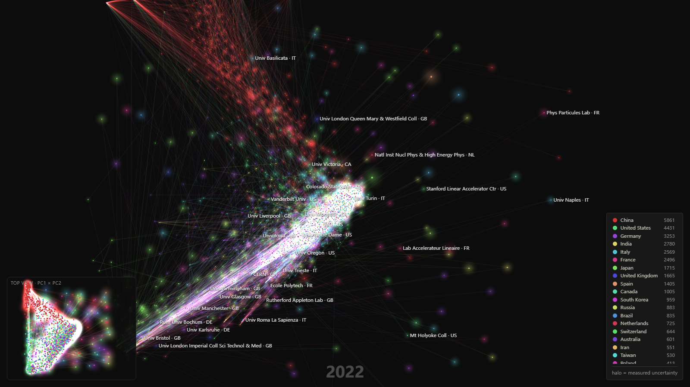

Quantum Institution Mobility · 2000-2026
以真实研究机构为节点、作者年度主机构变化为迁移边，统一观察全球量子人才流动、中美机构对比和中国机构网络。
三套视图使用同一数据口径与 27 个年度窗口
全部作者-年份-机构关联决定节点活跃度，合作论文中的次要机构不会被遗漏。
每位作者每年选择论文数最多的主机构，相邻观测年份主机构变化形成迁移边。
中国机构城市识别覆盖率 97.36%；无法可靠识别的机构保留在“城市未解析”组。